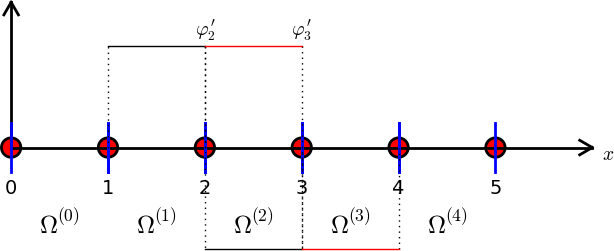

Basic principles for approximating differential equations
We shall apply least squares, Galerkin/projection, and collocation to differential equation models
Abstract differential equation
Abstract boundary conditions
Reminder about notation
New topics: variational formulation and boundary conditions
Residual-minimizing principles
The least squares method
The Galerkin method
The Method of Weighted Residuals
New terminology: test and trial functions
The collocation method
Examples on using the principles
The first model problem
Boundary conditions
The least squares method; principle
The least squares method; equation system
The least squares method; matrix and right-hand side expressions
Orthogonality of the basis functions gives diagonal matrix
Least squares method; solution
The Galerkin method; principle
The Galerkin method; solution
The collocation method
Comparison of the methods
Useful techniques
Integration by parts has many advantages
We use a boundary function to deal with non-zero Dirichlet boundary conditions
Example on constructing a boundary function for two Dirichlet conditions
Example on constructing a boundary function for one Dirichlet conditions
With a \( B(x) \), \( u\not\in V \), but \( \sum_{j}c_j\baspsi_j\in V \)
Abstract notation for variational formulations
Example on abstract notation
Bilinear and linear forms
The linear system associated with the abstract form
Equivalence with minimization problem
Examples on variational formulations
Variable coefficient; problem
Variable coefficient; Galerkin principle
Variable coefficient; integration by parts
Variable coefficient; variational formulation
Variable coefficient; linear system (the easy way)
Variable coefficient; linear system (full derivation)
First-order derivative in the equation and boundary condition; problem
First-order derivative in the equation and boundary condition; details
First-order derivative in the equation and boundary condition; observations
First-order derivative in the equation and boundary condition; abstract notation (optional)
First-order derivative in the equation and boundary condition; linear system
Terminology: natural and essential boundary conditions
Nonlinear coefficient; problem
Nonlinear coefficient; variational formulation
Nonlinear coefficient; where does the nonlinearity cause challenges?
Examples on detailed computations by hand
Dirichlet and Neumann conditions; problem
Dirichlet and Neumann conditions; linear system
Dirichlet and Neumann conditions; integration
Dirichlet and Neumann conditions; \( 2\times 2 \) system
When is the numerical method is exact?
Computing with finite elements
Variational formulation
How to deal with the boundary conditions?
Computation in the global physical domain; formulas
Computation in the global physical domain; details
Computation in the global physical domain; linear system
Write out the corresponding difference equation
Comparison with a finite difference discretization
Cellwise computations; formulas
Cellwise computations; details
Cellwise computations; details of boundary cells
Cellwise computations; assembly
General construction of a boundary function
Explanation
Example with two nonzero Dirichlet values; variational formulation
Example with two Dirichlet values; boundary function
Example with two Dirichlet values; details
Example with two Dirichlet values; cellwise computations
Modification of the linear system; ideas
Modification of the linear system; original system
Modification of the linear system; row replacement
Modification of the linear system; element matrix/vector
Symmetric modification of the linear system; algorithm
Symmetric modification of the linear system; example
Symmetric modification of the linear system; element level
Boundary conditions: specified derivative
The variational formulation
Method 1: Boundary function and exclusion of Dirichlet degrees of freedom
Method 2: Use all \( \basphi_i \) and insert the Dirichlet condition in the linear system
How the Neumann condition impacts the element matrix and vector
The finite element algorithm
Python pseudo code; the element matrix and vector
Python pseudo code; boundary conditions and assembly
Variational formulations in 2D and 3D
Integration by parts
Example on integration by parts; problem
Example on integration by parts in 1D/2D/3D
Incorporation of the Neumann condition in the variational formulation
Derivation of the linear system
Transformation to a reference cell in 2D/3D (1)
Transformation to a reference cell in 2D/3D (2)
Transformation to a reference cell in 2D/3D (3)
Numerical integration
Our aim is to extend the ideas for approximating \( f \) by \( u \), or solving $$ u = f $$
to real, spatial differential equations like $$ -u'' + bu = f,\quad u(0)=C,\ u'(L)=D $$
Examples (1D problems): $$ \begin{align*} \mathcal{L}(u) &= \frac{d^2u}{dx^2} - f(x),\\ \mathcal{L}(u) &= \frac{d}{dx}\left(\dfc(x)\frac{du}{dx}\right) + f(x),\\ \mathcal{L}(u) &= \frac{d}{dx}\left(\dfc(u)\frac{du}{dx}\right) - au + f(x),\\ \mathcal{L}(u) &= \frac{d}{dx}\left(\dfc(u)\frac{du}{dx}\right) + f(u,x) \end{align*} $$
Examples: $$ \begin{align*} \mathcal{B}_i(u) &= u - g,\quad &\hbox{Dirichlet condition}\\ \mathcal{B}_i(u) &= -\dfc \frac{du}{dx} - g,\quad &\hbox{Neumann condition}\\ \mathcal{B}_i(u) &= -\dfc \frac{du}{dx} - h(u-g),\quad &\hbox{Robin condition} \end{align*} $$
Much is similar to approximating a function (solving \( u=f \)), but two new topics are needed:
Goal: minimize \( R \) with respect to \( \sequencei{c} \) (and hope it makes a small \( e \) too) $$ R=R(c_0,\ldots,c_N; x)$$
Idea: minimize $$ \begin{equation*} E = ||R||^2 = (R,R) = \int_{\Omega} R^2 dx \end{equation*} $$
Minimization wrt \( \sequencei{c} \) implies $$ \frac{\partial E}{\partial c_i} = \int_{\Omega} 2R\frac{\partial R}{\partial c_i} dx = 0\quad \Leftrightarrow\quad (R,\frac{\partial R}{\partial c_i})=0,\quad i\in\If $$
\( N+1 \) equations for \( N+1 \) unknowns \( \sequencei{c} \)
Idea: make \( R \) orthogonal to \( V \), $$ (R,v)=0,\quad \forall v\in V $$
This implies $$ (R,\baspsi_i)=0,\quad i\in\If $$
\( N+1 \) equations for \( N+1 \) unknowns \( \sequencei{c} \)
Generalization of the Galerkin method: demand \( R \) orthogonal to some space \( W \), possibly \( W\neq V \): $$ (R,v)=0,\quad \forall v\in W $$
If \( \{w_0,\ldots,w_N\} \) is a basis for \( W \): $$ (R,w_i)=0,\quad i\in\If $$
Idea: demand \( R=0 \) at \( N+1 \) points in space $$ R(\xno{i}; c_0,\ldots,c_N)=0,\quad i\in\If$$
The collocation method is a weighted residual method with delta functions as weights $$ 0 = \int_\Omega R(x;c_0,\ldots,c_N) \delta(x-\xno{i})\dx = R(\xno{i}; c_0,\ldots,c_N)$$ $$ \hbox{property of } \delta(x):\quad \int_{\Omega} f(x)\delta (x-\xno{i}) dx = f(\xno{i}),\quad \xno{i}\in\Omega $$
Exemplify the least squares, Galerkin, and collocation methods in a simple 1D problem with global basis functions.
Basis functions: $$ \baspsi_i(x) = \sinL{i},\quad i\in\If$$
Residual: $$ \begin{align*} R(x;c_0,\ldots,c_N) &= u''(x) + f(x),\nonumber\\ &= \frac{d^2}{dx^2}\left(\sum_{j\in\If} c_j\baspsi_j(x)\right) + f(x),\nonumber\\ &= -\sum_{j\in\If} c_j\baspsi_j''(x) + f(x) \end{align*} $$
Since \( u(0)=u(L)=0 \) we must ensure that all \( \baspsi_i(0)=\baspsi_i(L)=0 \), because then $$ u(0) = \sum_jc_j{\color{red}\baspsi_j(0)} = 0,\quad u(L) = \sum_jc_j{\color{red}\baspsi_j(L)} =0 $$
Because: $$ \frac{\partial}{\partial c_i}\left(c_0\baspsi_0'' + c_1\baspsi_1'' + \cdots + c_{i-1}\baspsi_{i-1}'' + {\color{red}c_i\baspsi_{i}''} + c_{i+1}\baspsi_{i+1}'' + \cdots + c_N\baspsi_N'' \right) = \baspsi_{i}'' $$
Rearrangement: $$ \begin{equation*} \sum_{j\in\If}(\baspsi_i'',\baspsi_j'')c_j = -(f,\baspsi_i''),\quad i\in\If \end{equation*} $$
This is a linear system $$ \begin{equation*} \sum_{j\in\If}A_{i,j}c_j = b_i,\quad i\in\If \end{equation*} $$
Useful property of the chosen basis functions: $$ \begin{equation*} \int\limits_0^L \sinL{i}\sinL{j}\, dx = \delta_{ij},\quad \quad\delta_{ij} = \left\lbrace \begin{array}{ll} \half L & i=j \\ 0, & i\neq j \end{array}\right. \end{equation*} $$
\( \Rightarrow\ (\baspsi_i'',\baspsi_j'') = \delta_{ij} \), i.e., diagonal \( A_{i,j} \), and we can easily solve for \( c_i \): $$ \begin{equation*} c_i = \frac{2L}{\pi^2(i+1)^2}\int_0^Lf(x)\sinL{i}\, dx \end{equation*} $$
Let sympy do the work (\( f(x)=2 \)):
from sympy import *
import sys
i, j = symbols('i j', integer=True)
x, L = symbols('x L')
f = 2
a = 2*L/(pi**2*(i+1)**2)
c_i = a*integrate(f*sin((i+1)*pi*x/L), (x, 0, L))
c_i = simplify(c_i)
print c_i
Fast decay: \( c_2 = c_0/27 \), \( c_4=c_0/125 \) - only one term might be good enough: $$ \begin{equation*} u(x) \approx \frac{8L^2}{\pi^3}\sin\left(\pi\frac{x}{L}\right) \end{equation*} $$
\( R=u''+f \): $$ \begin{equation*} (u''+f,v)=0,\quad \forall v\in V, \end{equation*} $$ or rearranged, $$ \begin{equation*} (u'',v) = -(f,v),\quad\forall v\in V \end{equation*} $$
This is a variational formulation of the differential equation problem.
\( \forall v\in V \) is equivalent with \( \forall v\in\baspsi_i \), \( i\in\If \), resulting in $$ \begin{equation*} (\sum_{j\in\If} c_j\baspsi_j'', \baspsi_i)=-(f,\baspsi_i),\quad i\in\If \end{equation*} $$ $$ \begin{equation*} \sum_{j\in\If}(\baspsi_j'', \baspsi_i) c_j=-(f,\baspsi_i),\quad i\in\If \end{equation*} $$
Since \( \baspsi_i''\propto -\baspsi_i \), Galerkin's method gives the same linear system and the same solution as the least squares method (in this particular example).
\( R=0 \) (i.e.,the differential equation) must be satisfied at \( N+1 \) points: $$ \begin{equation*} -\sum_{j\in\If} c_j\baspsi_j''(\xno{i}) = f(\xno{i}),\quad i\in\If \end{equation*} $$
This is a linear system \( \sum_j A_{i,j}=b_i \) with entries $$ \begin{equation*} A_{i,j}=-\baspsi_j''(\xno{i})= (j+1)^2\pi^2L^{-2}\sin\left((j+1)\pi \frac{x_i}{L}\right), \quad b_i=2 \end{equation*} $$
Choose: \( N=0 \), \( x_0=L/2 \) $$ c_0=2L^2/\pi^2 $$
>>> import sympy as sym
>>> # Computing with Dirichlet conditions: -u''=2 and sines
>>> x, L = sym.symbols('x L')
>>> e_Galerkin = x*(L-x) - 8*L**2*sym.pi**(-3)*sym.sin(sym.pi*x/L)
>>> e_colloc = x*(L-x) - 2*L**2*sym.pi**(-2)*sym.sin(sym.pi*x/L)
>>> # Verify max error for x=L/2
>>> dedx_Galerkin = sym.diff(e_Galerkin, x)
>>> dedx_Galerkin.subs(x, L/2)
0
>>> dedx_colloc = sym.diff(e_colloc, x)
>>> dedx_colloc.subs(x, L/2)
0
# Compute max error: x=L/2, evaluate numerical, and simplify
>>> sym.simplify(e_Galerkin.subs(x, L/2).evalf(n=3))
-0.00812*L**2
>>> sym.simplify(e_colloc.subs(x, L/2).evalf(n=3))
0.0473*L**2
Second-order derivatives will hereafter be integrated by parts $$ \begin{align*} \int_0^L u''(x)v(x) dx &= - \int_0^Lu'(x)v'(x)dx + [vu']_0^L\nonumber\\ &= - \int_0^Lu'(x)v'(x) dx + u'(L)v(L) - u'(0)v(0) \end{align*} $$
Motivation:
Dirichlet conditions: \( u(0)=C \) and \( u(L)=D \). Choose for example $$ B(x) = \frac{1}{L}(C(L-x) + Dx):\qquad B(0)=C,\ B(L)=D $$ $$ \begin{equation*} u(x) = B(x) + \sum_{j\in\If} c_j\baspsi_j(x), \end{equation*} $$ $$ u(0) = B(0)= C,\quad u(L) = B(L) = D $$
Dirichlet condition: \( u(L)=D \). Choose for example $$ B(x) = D:\qquad B(L)=D $$ $$ \begin{equation*} u(x) = B(x) + \sum_{j\in\If} c_j\baspsi_j(x), \end{equation*} $$ $$ u(L) = B(L) = D $$
The finite element literature (and much FEniCS documentation) applies an abstract notation for the variational formulation:
Find \( (u-B)\in V \) such that $$ a(u,v) = L(v)\quad \forall v\in V $$
Variational formulation: $$ \int_{\Omega} u' v'dx = \int_{\Omega} fvdx - v(0)C \quad\hbox{or}\quad (u',v') = (f,v) - v(0)C \quad\forall v\in V $$
Abstract formulation: find \( (u-B)\in V \) such that $$ a(u,v) = L(v)\quad \forall v\in V$$
We identify $$ a(u,v) = (u',v'),\quad L(v) = (f,v) -v(0)C $$
Bilinear form means $$ \begin{align*} a(\alpha_1 u_1 + \alpha_2 u_2, v) &= \alpha_1 a(u_1,v) + \alpha_2 a(u_2, v), \\ a(u, \alpha_1 v_1 + \alpha_2 v_2) &= \alpha_1 a(u,v_1) + \alpha_2 a(u, v_2) \end{align*} $$
In nonlinear problems: Find \( (u-B)\in V \) such that \( F(u;v)=0\ \forall v\in V \)
We can now derive the corresponding linear system once and for all by inserting \( u = B + \sum_jc_j\baspsi_j \): $$ a(B + \sum_{j\in\If} c_j \baspsi_j,\baspsi_i)c_j = L(\baspsi_i)\quad i\in\If$$
Because of linearity,
$$ \sum_{j\in\If} \underbrace{a(\baspsi_j,\baspsi_i)}_{A_{i,j}}c_j = \underbrace{L(\baspsi_i) - a(B,\baspsi_i)}_{b_i}\quad i\in\If$$
If \( a \) is symmetric: \( a(u,v)=a(v,u) \), $$ a(u,v)=L(v)\quad\forall v\in V$$
is equivalent to minimizing the functional $$ F(v) = {\half}a(v,v) - L(v) $$ over all functions \( v\in V \). That is, $$ F(u)\leq F(v)\quad \forall v\in V $$
Derive variational formulations for some prototype differential equations in 1D that include
Galerkin's method: $$ (R, v) = 0,\quad \forall v\in V $$
or with integrals: $$ \int_{\Omega} \left(-\frac{d}{dx}\left( \dfc\frac{du}{dx}\right) -f\right)v \dx = 0,\quad \forall v\in V $$
Boundary terms vanish since \( v(0)=v(L)=0 \)
Find \( (u-B)\in V \) such that $$ \int_{\Omega} \dfc(x)\frac{du}{dx}\frac{dv}{dx}dx = \int_{\Omega} f(x)vdx,\quad \forall v\in V $$
Compact notation: $$ \underbrace{(\dfc u',v')}_{a(u,v)} = \underbrace{(f,v)}_{L(v)}, \quad \forall v\in V $$
With $$ a(u,v) = (\dfc u', v'),\quad L(v) = (f,v) $$
we can just use the formula for the linear system: $$ \begin{align*} A_{i,j} &= a(\baspsi_j,\baspsi_i) = (\dfc \baspsi_j', \baspsi_i') = \int_\Omega \dfc \baspsi_j' \baspsi_i'\dx = \int_\Omega \baspsi_i' \dfc \baspsi_j'\dx \quad (= a(\baspsi_i,\baspsi_j) = A_{j,i}\\ b_i &= (f,\baspsi_i) - (\dfc B',\baspsi_i) = \int_\Omega (f\baspsi_i - \dfc L^{-1}(D-C)\baspsi_i')\dx \end{align*} $$
\( v=\baspsi_i \) and \( u=B + \sum_jc_j\baspsi_j \): $$ (\dfc B' + \dfc \sum_{j\in\If} c_j \baspsi_j', \baspsi_i') = (f,\baspsi_i), \quad i\in\If $$
Reorder to form linear system: $$ \sum_{j\in\If} (\dfc\baspsi_j', \baspsi_i')c_j = (f,\baspsi_i) + (aL^{-1}(D-C), \baspsi_i'), \quad i\in\If $$
This is \( \sum_j A_{i,j}c_j=b_i \) with $$ \begin{align*} A_{i,j} &= (a\baspsi_j', \baspsi_i') = \int_{\Omega} \dfc(x)\baspsi_j'(x) \baspsi_i'(x)\dx\\ b_i &= (f,\baspsi_i) + (aL^{-1}(D-C),\baspsi_i')= \int_{\Omega} \left(f\baspsi_i + \dfc\frac{D-C}{L}\baspsi_i'\right) \dx \end{align*} $$
New features:
Galerkin's method: multiply by \( v \), integrate over \( \Omega \), integrate by parts. $$ (-u'' + bu' - f, v) = 0,\quad\forall v\in V$$ $$ (u',v') + (bu',v) = (f,v) + [u' v]_0^L, \quad\forall v\in V$$
\( [u' v]_0^L = u'(L)v(L) - u'(0)v(0)= E v(L) \) since \( v(0)=0 \) and \( u'(L)=E \) $$ (u',v') + (bu',v) = (f,v) + Ev(L), \quad\forall v\in V$$
Important observations:
Abstract notation: $$ a(u,v)=L(v)\quad\forall v\in V$$
With $$ (u'v') + (bu',v) = (f,v) + Ev(L), \quad\forall v\in V$$
we have $$ \begin{align*} a(u,v)&=(u',v') + (bu',v)\\ L(v)&= (f,v) + E v(L) \end{align*} $$
Insert \( u=C+\sum_jc_j\baspsi_j \) and \( v=\baspsi_i \) in $$ (u'v') + (bu',v) = (f,v) + Ev(L), \quad\forall v\in V$$ and manipulate to get $$ \sum_{j\in\If} \underbrace{((\baspsi_j',\baspsi_i') + (b\baspsi_j',\baspsi_i))}_{A_{i,j}} c_j = \underbrace{(f,\baspsi_i) + E \baspsi_i(L)}_{b_i},\quad i\in\If $$
Observation: \( A_{i,j} \) is not symmetric because of the term $$ (b\baspsi_j',\baspsi_i)=\int_{\Omega} b\baspsi_j'\baspsi_i dx \neq \int_{\Omega} b \baspsi_i' \baspsi_jdx = (\baspsi_i',b\baspsi_j) $$
It is easy to forget the boundary term when integrating by parts. That mistake may prescribe a condition on \( u' \)!
Problem: $$ \begin{equation*} -(\dfc(u)u')' = f(u),\quad x\in [0,L],\ u(0)=0,\ u'(L)=E \end{equation*} $$
Galerkin: multiply by \( v \), integrate, integrate by parts $$ \int_0^L \dfc(u)\frac{du}{dx}\frac{dv}{dx}\dx = \int_0^L f(u)v\dx + [\dfc(u)vu']_0^L\quad\forall v\in V $$
or $$ (\dfc(u)u', v') = (f(u),v) + \dfc(u(L))v(L)E\quad\forall v\in V $$
Insert \( u(x) = B(x) + \sum_{j\in\If}c_j\basphi_j \) and derive $$ \sum_{j\in\If} A_{i,j}c_j = b_i,\quad i\in\If$$
with $$ A_{i,j} = (\baspsi_j',\baspsi_i') $$ $$ b_i = (f,\baspsi_i) - (D,\baspsi_i') -C\baspsi_i(0) $$
Choose \( f(x)=2 \): $$ \begin{align*} b_i &= (2,\baspsi_i) - (D,\baspsi_i') -C\baspsi_i(0)\\ &= \int_0^1 \left( 2(1-x)^{i+1} - D(i+1)(1-x)^i\right)dx -C\baspsi_i(0) \end{align*} $$
Can easily do the integrals with sympy. \( N=1 \) and \( \If = \{0,1\} \):
$$
\begin{equation*}
\left(\begin{array}{cc}
1 & 1\\
1 & 4/3
\end{array}\right)
\left(\begin{array}{c}
c_0\\
c_1
\end{array}\right)
=
\left(\begin{array}{c}
-C+D+1\\
2/3 -C + D
\end{array}\right)
\end{equation*}
$$
$$ c_0=-C+D+2, \quad c_1=-1,$$
$$ u(x) = 1 -x^2 + D + C(x-1)\quad\hbox{(exact solution)} $$
Assume that apart from boundary conditions, \( \uex \) lies in the same space \( V \) as where we seek \( u \): $$ \begin{align*} u &= B + {\color{red}F},\quad F\in V\\ a(B+F, v) &= L(v),\quad\forall v\in V\\ \uex & = B + {\color{red}E},\quad E\in V\\ a(B+E, v) &= L(v),\quad\forall v\in V \end{align*} $$
Subtract: \( a(F-E,v)=0\ \Rightarrow\ E=F \) and \( u = \uex \)
Tasks:
Variational formulation: $$ (u',v') = (2,v)\quad\forall v\in V $$
Since \( u(0)=0 \) and \( u(L)=0 \), we must force $$ v(0)=v(L)=0,\quad \baspsi_i(0)=\baspsi_i(L)=0$$
Let's choose the obvious finite element basis: \( \baspsi_i=\basphi_i \), \( i=0,\ldots,N_n-1 \)
Problem: \( \basphi_0(0)\neq 0 \) and \( \basphi_{N_n-1}(L)\neq 0 \)
Solution: we just exclude \( \basphi_0 \) and \( \basphi_{N_n-1} \) from the basis and work with $$ \baspsi_i=\basphi_{i+1},\quad i=0,\ldots,N=N_n-3$$
Introduce index mapping \( \nu(i) \): \( \baspsi_i = \basphi_{\nu(i)} \) $$ u = \sum_{j\in\If}c_j\basphi_{\nu(j)},\quad i=0,\ldots,N,\quad \nu(j) = j+1$$
Irregular numbering: more complicated \( \nu(j) \) table
Many will prefer to change indices to obtain a \( \basphi_i'\basphi_j' \) product: \( i+1\rightarrow i \), \( j+1\rightarrow j \) $$ \begin{equation*} A_{i-1,j-1}=\int_0^L\basphi_{i}'(x)\basphi_{j}'(x) \dx,\quad b_{i-1}=\int_0^L2\basphi_{i}(x) \dx \end{equation*} $$

General equation at node \( i \): $$ -\frac{1}{h}c_{i-1} + \frac{2}{h}c_{i} - \frac{1}{h}c_{i+1} = 2h $$
Now, \( c_i = u(\xno{i+1})\equiv u_{i+1} \). Writing out the equation at node \( i-1 \), $$ -\frac{1}{h}c_{i-2} + \frac{2}{h}c_{i-1} - \frac{1}{h}c_{i} = 2h $$
translates directly to $$ -\frac{1}{h}u_{i-1} + \frac{2}{h}u_{i} - \frac{1}{h}u_{i+1} = 2h $$
The standard finite difference method for \( -u''=2 \) is $$ -\frac{1}{h^2}u_{i-1} + \frac{2}{h^2}u_{i} - \frac{1}{h^2}u_{i+1} = 2 $$
Multiply by \( h \)!
The finite element method and the finite difference method are identical in this example.
(Remains to study the equations at the end points, which involve boundary values - but these are also the same for the two methods)
From the chain rule $$ \frac{d\refphi_r}{dx} = \frac{d\refphi_r}{dX}\frac{dX}{dx} = \frac{2}{h}\frac{d\refphi_r}{dX}$$
Must run through all \( r,s=0,1 \) and \( r=0,1 \) and compute each entry in the element matrix and vector: $$ \begin{equation*} \tilde A^{(e)} =\frac{1}{h}\left(\begin{array}{rr} 1 & -1\\ -1 & 1 \end{array}\right),\quad \tilde b^{(e)} = h\left(\begin{array}{c} 1\\ 1 \end{array}\right) \end{equation*} $$
Example: $$ \tilde A^{(e)}_{0,1} = \int_{-1}^1 \frac{2}{h}\frac{d\refphi_0}{dX}\frac{2}{h}\frac{d\refphi_1}{dX} \frac{h}{2} \dX = \frac{2}{h}(-\half)\frac{2}{h}\half\frac{h}{2} \int_{-1}^1\dX = -\frac{1}{h} $$
Only one degree of freedom ("node") in these cells (\( r=0 \) counts the only dof)
4 P1 elements:
vertices = [0, 0.5, 1, 1.5, 2]
cells = [[0, 1], [1, 2], [2, 3], [3, 4]]
dof_map = [[0], [0, 1], [1, 2], [2]] # only 1 dof in elm 0, 3
Python code for the assembly algorithm:
# Ae[e][r,s]: element matrix, be[e][r]: element vector
# A[i,j]: coefficient matrix, b[i]: right-hand side
for e in range(len(Ae)):
for r in range(Ae[e].shape[0]):
for s in range(Ae[e].shape[1]):
A[dof_map[e,r],dof_map[e,s]] += Ae[e][i,j]
b[dof_map[e,r]] += be[e][i,j]
Result: same linear system as arose from computations in the physical domain
Suppose we have a Dirichlet condition \( u(\xno{k})=U_k \), \( k\in\Ifb \): $$ u(\xno{k}) = \sum_{j\in\Ifb} U_j\underbrace{\basphi_j(x)}_{\neq 0 \hbox{ only for }j=k} + \sum_{j\in\If} c_j\underbrace{\basphi_{\nu(j)}(\xno{k})}_{=0,\ k\not\in\If} = U_k $$
Here \( \Ifb = \{0,N_n-1\} \), \( U_0=C \), \( U_{N_n-1}=D \); \( \baspsi_i \) are the internal \( \basphi_i \) functions: $$ \baspsi_i = \basphi_{\nu(i)}, \quad \nu(i)=i+1,\quad i\in\If = \{0,\ldots,N=N_n-3\} $$ $$ \begin{align*} u(x) &= \underbrace{C\cdot\basphi_0 + D\basphi_{N_n-1}}_{B(x)} + \sum_{j\in\If} c_j\basphi_{j+1}\\ &= C\cdot\basphi_0 + D\basphi_{N_n-1} + c_0\basphi_1 + c_1\basphi_2 +\cdots + c_N\basphi_{N_n-2} \end{align*} $$
Insert \( u = B + \sum_j c_j\baspsi_j \) in variational formulation: $$ (u',v') = (2,v)\quad\Rightarrow\quad (\sum_jc_j\baspsi_j',\baspsi_i') = (2-B',\baspsi_i)\quad \forall v\in V$$ $$ \begin{align*} A_{i-1,j-1} &= \int_0^L \basphi_i'(x)\basphi_j'(x) \dx\\ b_{i-1} &= \int_0^L (f(x)\basphi_i(x) - B'(x)\basphi_i'(x))\dx,\quad B'(x)=C\basphi_{0}'(x) + D\basphi_{N_n-1}'(x) \end{align*} $$ for \( i,j = 1,\ldots,N+1=N_n-1 \).
New boundary terms from \( -\int B'\basphi_i'\dx \): add \( C/h \) to \( b_0 \) and \( D/h \) to \( b_N \)
From the last cell: $$ \tilde b_0^{N_e} = \int_{-1}^1 \left(f\refphi_0 - D\frac{2}{h}\frac{d\refphi_1}{dX}\frac{2}{h}\frac{d\refphi_0}{dX}\right) \frac{h}{2} \dX = \frac{h}{2} 2\int_{-1}^1 \refphi_0 \dX - D\frac{2}{h}\frac{1}{2}\frac{2}{h}(-\frac{1}{2})\frac{h}{2}\cdot 2 = h + D\frac{1}{h}\tp $$
\( u \) is treated as unknown at all boundaries when computing entries in the linear system
Assemble as if there were no Dirichlet conditions: $$ \begin{equation*} \frac{1}{h}\left( \begin{array}{ccccccccc} 1 & -1 & 0 &\cdots & \cdots & \cdots & \cdots & \cdots & 0 \\ -1 & 2 & -1 & \ddots & & & & & \vdots \\ 0 & -1 & 2 & -1 & \ddots & & & & \vdots \\ \vdots & \ddots & & \ddots & \ddots & 0 & & & \vdots \\ \vdots & & \ddots & \ddots & \ddots & \ddots & \ddots & & \vdots \\ \vdots & & & 0 & -1 & 2 & -1 & \ddots & \vdots \\ \vdots & & & & \ddots & \ddots & \ddots &\ddots & 0 \\ \vdots & & & & &\ddots & \ddots &\ddots & -1 \\ 0 &\cdots & \cdots &\cdots & \cdots & \cdots & 0 & -1 & 1 \end{array} \right) \left( \begin{array}{c} c_0 \\ \vdots\\ \vdots\\ \vdots \\ \vdots \\ \vdots \\ \vdots \\ \vdots\\ c_{N} \end{array} \right) = \left( \begin{array}{c} h \\ 2h\\ \vdots\\ \vdots \\ \vdots \\ \vdots \\ \vdots \\ 2h\\ h \end{array} \right) \end{equation*} $$
In cell 0 we know \( u \) for local node (degree of freedom) \( r=0 \). Replace the first cell equation by \( \tilde c_0 = 0 \): $$ \begin{equation*} \tilde A^{(0)} = A = \frac{1}{h}\left(\begin{array}{rr} h & 0\\ -1 & 1 \end{array}\right),\quad \tilde b^{(0)} = \left(\begin{array}{c} 0\\ h \end{array}\right) \end{equation*} $$
In cell \( N_e \) we know \( u \) for local node \( r=1 \). Replace the last equation in the cell system by \( \tilde c_1=D \): $$ \begin{equation*} \tilde A^{(N_e)} = A = \frac{1}{h}\left(\begin{array}{rr} 1 & -1\\ 0 & h \end{array}\right),\quad \tilde b^{(N_e)} = \left(\begin{array}{c} h\\ D \end{array}\right) \end{equation*} $$
Symmetric modification applied to \( \tilde A^{(N_e)} \): $$ \begin{equation*} \tilde A^{(N_e)} = A = \frac{1}{h}\left(\begin{array}{rr} 1 & 0\\ 0 & h \end{array}\right),\quad \tilde b^{(N_e)} = \left(\begin{array}{c} h + D/h\\ D \end{array}\right) \end{equation*} $$
How can we incorporate \( u'(0)=C \) with finite elements?
Galerkin's method: $$ \begin{equation*} \int_0^L(u''(x)+f(x))\baspsi_i(x) dx = 0,\quad i\in\If \end{equation*} $$
Integration of \( u''\baspsi_i \) by parts: $$ \begin{equation*} \int_0^Lu'(x)\baspsi_i'(x) \dx -(u'(L)\baspsi_i(L) - u'(0)\baspsi_i(0)) - \int_0^L f(x)\baspsi_i(x) \dx =0 \end{equation*} $$
Boundary terms \( u'\basphi_i \) at points \( \xno{i} \) where Dirichlet values apply can always be forgotten.
Assemble entries for \( i=0,\ldots,N=N_n-1 \) and then modify the last equation to \( c_N=D \)
The extra term \( C\basphi_0(0) \) affects only the element vector from the first cell since \( \basphi_0=0 \) on all other cells. $$ \begin{equation*} \tilde A^{(0)} = A = \frac{1}{h}\left(\begin{array}{rr} 1 & 1\\ -1 & 1 \end{array}\right),\quad \tilde b^{(0)} = \left(\begin{array}{c} h - C\\ h \end{array}\right) \end{equation*} $$
The differential equation problem defines the integrals in the variational formulation.
Request these functions from the user:
integrand_lhs(phi, r, s, x)
boundary_lhs(phi, r, s, x)
integrand_rhs(phi, r, x)
boundary_rhs(phi, r, x)
Must also have a mesh with vertices, cells, and dof_map
<Declare global matrix, global rhs: A, b>
# Loop over all cells
for e in range(len(cells)):
# Compute element matrix and vector
n = len(dof_map[e]) # no of dofs in this element
h = vertices[cells[e][1]] - vertices[cells[e][0]]
<Declare element matrix, element vector: A_e, b_e>
# Integrate over the reference cell
points, weights = <numerical integration rule>
for X, w in zip(points, weights):
phi = <basis functions + derivatives at X>
detJ = h/2
x = <affine mapping from X>
for r in range(n):
for s in range(n):
A_e[r,s] += integrand_lhs(phi, r, s, x)*detJ*w
b_e[r] += integrand_rhs(phi, r, x)*detJ*w
# Add boundary terms
for r in range(n):
for s in range(n):
A_e[r,s] += boundary_lhs(phi, r, s, x)*detJ*w
b_e[r] += boundary_rhs(phi, r, x)*detJ*w
for e in range(len(cells)):
...
# Incorporate essential boundary conditions
for r in range(n):
global_dof = dof_map[e][r]
if global_dof in essbc_dofs:
# dof r is subject to an essential condition
value = essbc_docs[global_dof]
# Symmetric modification
b_e -= value*A_e[:,r]
A_e[r,:] = 0
A_e[:,r] = 0
A_e[r,r] = 1
b_e[r] = value
# Assemble
for r in range(n):
for s in range(n):
A[dof_map[e][r], dof_map[e][r]] += A_e[r,s]
b[dof_map[e][r] += b_e[r]
<solve linear system>
$$ \begin{equation*} -\int_{\Omega} \nabla\cdot (\dfc(\x)\nabla u) v\dx = \int_{\Omega} \dfc(\x)\nabla u\cdot\nabla v \dx - \int_{\partial\Omega} a\frac{\partial u}{\partial n} v \ds \end{equation*} $$
Galerkin's method: multiply by \( v\in V \) and integrate over \( \Omega \), $$ \int_{\Omega} (\v\cdot\nabla u + \beta u)v\dx = \int_{\Omega} \nabla\cdot\left( \dfc\nabla u\right)v\dx + \int_{\Omega}fv \dx $$
Integrate the second-order term by parts according to the formula: $$ \int_{\Omega} \nabla\cdot\left( \dfc\nabla u\right) v \dx = -\int_{\Omega} \dfc\nabla u\cdot\nabla v\dx + \int_{\partial\Omega} \dfc\frac{\partial u}{\partial n} v\ds, $$
Galerkin's method then gives $$ \int_{\Omega} (\v\cdot\nabla u + \beta u)v\dx = -\int_{\Omega} \dfc\nabla u\cdot\nabla v\dx + \int_{\partial\Omega} \dfc\frac{\partial u}{\partial n} v\ds + \int_{\Omega} fv \dx $$
Note: \( v\neq 0 \) only on \( \partial\Omega_N \) (since \( v=0 \) on \( \partial\Omega_D \)): $$ \int_{\partial\Omega} \dfc\frac{\partial u}{\partial n} v\ds = \int_{\partial\Omega_N} \underbrace{\dfc\frac{\partial u}{\partial n}}_{-g} v\ds = -\int_{\partial\Omega_N} gv\ds $$
The final variational form: $$ \int_{\Omega} (\v\cdot\nabla u + \beta u)v\dx = -\int_{\Omega} \dfc\nabla u\cdot\nabla v \dx - \int_{\partial\Omega_N} g v\ds + \int_{\Omega} fv \dx $$
Or with inner product notation: $$ (\v\cdot\nabla u, v) + (\beta u,v) = - (\dfc\nabla u,\nabla v) - (g,v)_{N} + (f,v) $$
\( (g,v)_{N} \): line or surface integral over \( \partial\Omega_N \).
We want to compute an integral in the physical domain by integrating over the reference cell.
Mapping from reference to physical coordinates: $$ \x(\X) $$
with Jacobian \( J \), $$ J_{i,j}=\frac{\partial x_j}{\partial X_i} $$
Can derive $$ \begin{align*} \nabla_{\X}\refphi_r &= J\cdot\nabla_{\x}\basphi_i\\ \nabla_{\x}\basphi_i &= \nabla_{\x}\refphi_r(\X) = J^{-1}\cdot\nabla_{\X}\refphi_r(\X) \end{align*} $$
Integral transformation from physical to reference coordinates: $$ \begin{equation*} \int_{\Omega^{(e)}} \dfc(\x)\nabla_{\x}\basphi_i\cdot\nabla_{\x}\basphi_j\dx = \int_{\tilde\Omega^r} \dfc(\x(\X))(J^{-1}\cdot\nabla_{\X}\refphi_r)\cdot (J^{-1}\cdot\nabla\refphi_s)\det J\dX \end{equation*} $$
Numerical integration over reference cell triangles and tetrahedra: $$ \int_{\tilde\Omega^r} g\dX = \sum_{j=0}^{n-1} w_j g(\bar\X_j)$$
Module numint.py contains different rules:
>>> import numint
>>> x, w = numint.quadrature_for_triangles(num_points=3)
>>> x
[(0.16666666666666666, 0.16666666666666666),
(0.66666666666666666, 0.16666666666666666),
(0.16666666666666666, 0.66666666666666666)]
>>> w
[0.16666666666666666, 0.16666666666666666, 0.16666666666666666]